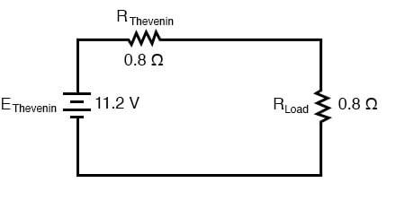
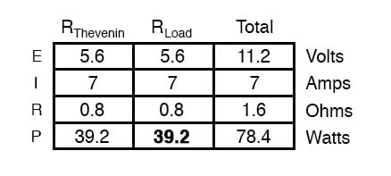
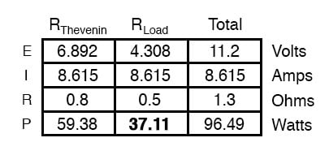
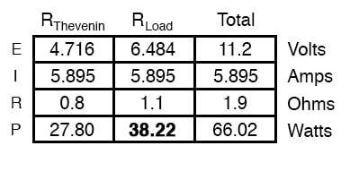

The Maximum Power Transfer Theorem is not so much a means of analysis as it is an aid to system design. Simply stated, the maximum amount of power will be dissipated by a load resistance when that load resistance is equal to the Thevenin/Norton resistance of the network supplying the power. If the load resistance is lower or higher than the Thevenin/Norton resistance of the source network, its dissipated power will be less than the maximum.
This is essentially what is aimed for in radio transmitter design, where the antenna or transmission line “impedance” is matched to final power amplifier “impedance” for maximum radio frequency power output. Impedance, the overall opposition to AC and DC current, is very similar to resistance and must be equal between source and load for the greatest amount of power to be transferred to the load. A load impedance that is too high will result in low power output. A load impedance that is too low will not only result in low power output but possibly overheating of the amplifier due to the power dissipated in its internal (Thevenin or Norton) impedance.
Taking our Thevenin equivalent example circuit, the Maximum Power Transfer Theorem tells us that the load resistance resulting in greatest power dissipation is equal in value to the Thevenin resistance (in this case, 0.8 Ω):

With this value of load resistance, the dissipated power will be 39.2 watts:

If we were to try a lower value for the load resistance (0.5 Ω instead of 0.8 Ω, for example), our power dissipated by the load resistance would decrease:

Power dissipation increased for both the Thevenin resistance and the total circuit, but it decreased for the load resistor. Likewise, if we increase the load resistance (1.1 Ω instead of 0.8 Ω, for example), power dissipation will also be less than it was at 0.8 Ω exactly:

If you were designing a circuit for maximum power dissipation at the load resistance, this theorem would be very useful. Having reduced a network down to a Thevenin voltage and resistance (or Norton current and resistance), you simply set the load resistance equal to that Thevenin or Norton equivalent (or vice versa) to ensure maximum power dissipation at the load. Practical applications of this might include radio transmitter final amplifier stage design (seeking to maximize the power delivered to the antenna or transmission line), a grid-tied inverter loading a solar array, or electric vehicle design (seeking to maximize the power delivered to drive motor).
The Maximum Power Transfer Theorem does not: Maximum power transfer does not coincide with maximum efficiency. Application of The Maximum Power Transfer theorem to AC power distribution will not result in maximum or even high efficiency. The goal of high efficiency is more important for AC power distribution, which dictates a relatively low generator impedance compared to the load impedance.
Similar to AC power distribution, high fidelity audio amplifiers are designed for a relatively low output impedance and a relatively high speaker load impedance. As a ratio, “output impedance”: “load impedance” is known as damping factor, typically in the range of 100 to 1000.
Maximum power transfer does not coincide with the goal of the lowest noise. For example, the low-level radio frequency amplifier between the antenna and a radio receiver is often designed for the lowest possible noise. This often requires a mismatch of the amplifier input impedance to the antenna as compared with that dictated by the maximum power transfer theorem.
REVIEW: